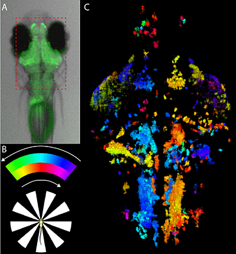

News Archives : 2014 : Transparent Thoughts [Engert Lab]
by Ruben Portugues
March 19, 2014
How do brains process sensory input and use these to choose or decide what to do? How similar is the brain activity in different individuals that are exposed to the same visual stimulus and perform the same behavior? How many neurons are typically active in these circumstances?
In a paper published this week in Neuron (Portugues et al. Neuron 2014), the labs of Florian Engert at MCB and Michael Orger at the Champalimaud Foundation in Portugal (formerly a postdoc in the Engert lab), address these issues in larval zebrafish. The larval zebrafish is transparent, which allows the experimenters to monitor the activity of every single neuron in the brain while each fish watches a simple movie and moves its eyes and tail in response. They then correlate single neuron activity to both the changing visual stimuli and the eye and tail movements of the fish to build whole-brain activity maps that can be compared between fish. They find remarkable similarity between each fish brain, suggesting that stereotypical neural pathways process the visual stimuli and generate the behavior.
The result of the study is a set of activity maps with single cell resolution for all the neurons in the brain for many individuals. The technique is invaluable in studying the brain circuits involved in performing stimulus driven behaviors as it is possible to determine which brain regions are active and what features of the stimulus or behavior correlate best with this activity. This allows the description of the circuitry from sensory regions, where the stimulus is first relayed to the brain from the ganglion cells in the retina, to the motor regions, which control the movement of the eye muscles. This is the first time that such a study can be performed at this resolution in a vertebrate brain.
The first result that arises is that 5% of the brain’s volume is engaged in this behavior. The exact percentage varies across regions, with regions in the hindbrain (including the inferior olive) reaching almost up to 30%.
Comparing this circuitry across individuals reveals a striking stereotypy. By morphing all the individual brains to a reference brain, Portugues et al. show that in many brain regions, such as the pretectum, the oculomotor nucleus, the cerebellum and the inferior olive, it is not necessary to travel more than 2 microns in any fish brain to find a similarly active neuron.
What does all this activity mean? In order to address this question, the authors perform regression-based analysis to correlate neuronal activity with 192 different features of the sensory stimulus and the motor output. They find neurons with activity coding for stimulus velocity, stimulus speed, stimulus motion on the left or right visual field that is consistent with rotation or translation in the whole visual field, eye position, eye velocity and tail motion amongst many others. Again, mapping the neuronal activity from different larvae to the same reference brain shows that these functionally identified neuronal signals cluster in the same anatomical locations across individuals.
This allows the authors to obtain, for the first time, a whole-brain functional map of activity with single-cell resolution in a vertebrate performing a sensorimotor behavior.
After having done its job by spending anything between 4 and 17 hours under the microscope observing a moving windmill, the larva is freed and swims away, content with the knowledge that its brain has been thoroughly imaged and that we know what it is thinking.

Figure 1:
A) A larval zebrafish expressing the genetically encoded calcium indicator GCaMP5G in all neurons in the brain. The red rectangle denotes the field of view covered in the imaging experiments (see C).
B) The larva is placed in a custom built 2-photon setup and is shown a large windmill stimulus centered on its head. The stimulus rotates to and fro with sinusoidal speed and 40 degree amplitude. The phase of the stimulus can be color-coded (bar above).
C) Activity in the brain is phase locked to the stimulus, and neurons and neuropil can be color-coded depending on the phase at which they are active. This panel shows the z-projection of all the active voxels in one experiment.
Figure 2:
A) Left/right sensory and motor responses can be dissociated by showing sensory stimuli to just one half of the visual field.
B) Regressor based analysis can be used to correlate neuronal activity to features of both the stimulus and the motor output. Red traces show actual neuronal signals, where’s the black traces show the expected trace if the signal were to linearly encoded the respective feature. Correlation values exceed 0.7.
Movie 1: Top: 3-dimensional dataset obtained by imaging the brain of a single fish.
Middle: 3-dimensional dataset obtained from averaging the brain of two individual fish that have been morphed to a reference brain.
Bottom: Same as middle but with 6 individual fish. Areas of sparse activity in individual fish (such as the optic tectum) rarely line up and are “averaged out” in the process, whereas anatomical regions displaying consistent stereotypy clearly emerge in the averaging process.